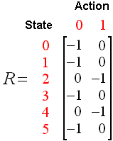

T-Rex Runner with Keras

「無法連上網際網路」畫面的小恐龍一直是Chrome的小彩蛋，而這裡使用了神經網路+Q-learning，讓AI去學習玩這個遊戲。
Q-learning介紹
Q-learning是強化學習(Reinforcement Learning)中的一種。舉個例子來看：有個小朋友在練習走路，如果往前走了一步，父母就會給他糖果；反之則無。
而這個程式也是一樣，利用強化學習的方式，讓程式在沒有監督的環境下，能夠自己找出讓小恐龍存活、得到最高獎賞的方法。
而Q-learning是沒有模型的強化學習，說簡單點，就是因為我們不知道要怎麼建立模型的情況，所以我們自己定義每種「行動」(跳跟不跳)的「獎賞」，並且判斷當前「狀態」做的「行動」會不會導致小恐龍死掉，讓程式自己去挖掘在這個情況下到底要不要往上跳。
經過Q-learning的方法學習後，會產生類似下圖的表格(在這裡我們的「狀態」就是遊戲截圖)：
對於每種狀態，會對應到一個動作，而因為我們只分成跳跟不跳，所以只有0和1。
而在這個模型裡面，有兩個很重要。其中一個是名叫epsilon($\epsilon$)的函數，我們引入了$\epsilon$函數來決定部分行動的隨機性，然後再逐漸降低$\epsilon$減少隨機動作的發生，最後讓模型去挖掘最好的最好得到獎賞的動作。另一個就是$\gamma$(Discount Factor)，$\gamma$決定了程式做出動作時要看多遠，因為小恐龍在無障礙物時跳起來可能會在之後掉到仙人掌上面，而在這程式裡面$\gamma=0.99$時，模型能夠辨認上述所遇到的問題、知道在半空中沒辦法二連跳。
遊戲模組
此程式利用了Selenium模組使Python能與Firefox溝通，並利用Pillow和OpenCV來處理影像。
遊戲處理
修改遊戲
為了簡化我們的模型，我們簡化了原始的遊戲，使之背景不會變成夜晚、遊戲速度不會加快。
處理影像
此遊戲的截圖解析度是$1200\times 300$，而這裡把圖片裁切並壓縮成4個$80\times80$的圖片並丟入神經網路裡做運算。
Code
Github: samuel21119/T-Rex-Runner
T-Rex 遊戲網址: samuel21119.github.io/t-rex